Two questions. How far does each kind of mould spread when it starts in one spot at the centre? And what happens when some of the walkers in one mould have different settings from the rest? These are looks with 3 seeds each, not paired tests. Each strip shows seed 1 at 2, 5, 10 and 20 s.
1 · Spread from one spot
Only explorers cross the map
Without food, the plain network curls into a single ring that widens slowly. Droplets stay where they form. Explorers fill the dish in about 10 s.
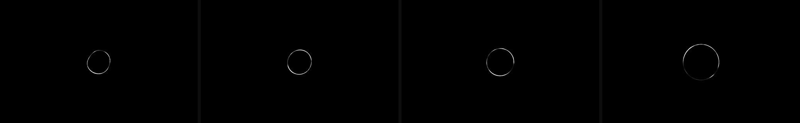
2 s5 s10 s20 s
Jenson network, 1M walkers
tube at 20 s
1832-1939 cells, 0.4% of the dish
ring radius
64 → 96 cells from 2 to 20 s
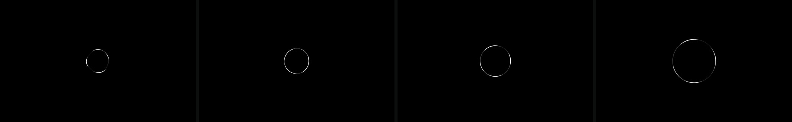
2 s5 s10 s20 s
Chance-weighted turn
tube at 20 s
1198-1202 cells
ring radius
61 → 115 cells
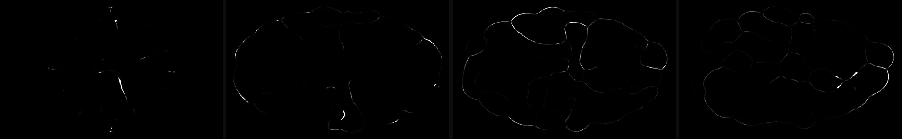
2 s5 s10 s20 s
Explorers (spread 1)
tube
13828-14013 cells at 10 s, 8827-9322 at 20 s
loops at 20 s
34-38
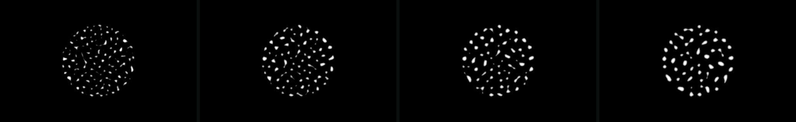
2 s5 s10 s20 s
Droplets, 30k walkers from a 200-cell disc (frames at 2, 5, 10, 20 s of 30)
outer edge (r90)
185 → 180-182 cells in 30 s
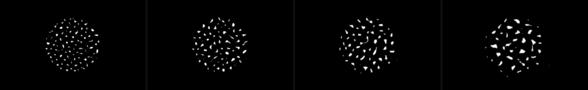
2 s5 s10 s20 s
Grazing droplets
outer edge (r90)
185 → 192-199 cells in 30 s
2 · Mixed walkers
The two kinds sort themselves into parts
A share of the walkers is a second kind with its own reach, angles, step or deposit. Both kinds lay and smell one shared trail, so it's still one mould. Amber is where the ordinary walkers stand, teal is where the second kind stands, and grey is the trail. Wherever the second kind moves differently, the two end up in different places.
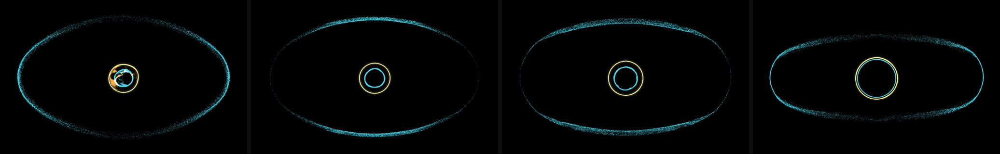
2 s5 s10 s20 s
Outriders: 10% reach far, step twice as far, lay 0.3x
scouts off the trail
6-7%, core 0%
3 seeds
same picture
Within 2 s the scouts reach the dish wall and ride it as a faint halo. The core stays in the middle as nested rings.
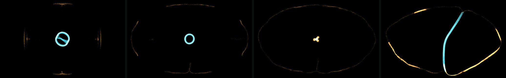
2 s5 s10 s20 s
Splitter: 20% turn 4x as sharply, with sensors twice as wide
median distance at 20 s
ordinary 138-372, wanderers 29-49
apart
3 of 3 seeds
The ordinary walkers fly out to the wall. The wanderers hold a tight ring at the centre, which had become one cord across the dish by 20 s.
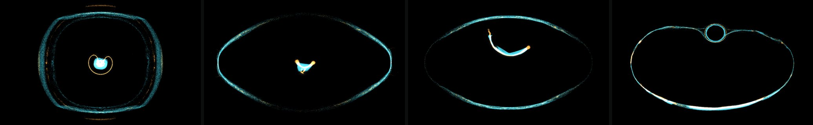
2 s5 s10 s20 s
Roamer: half the walkers reach 3x as far
median distance
13-28 at 2 s, then 251-329 at 20 s
The long-reach half rides the wall. The short half balls up into a knot that crawls across the dish.
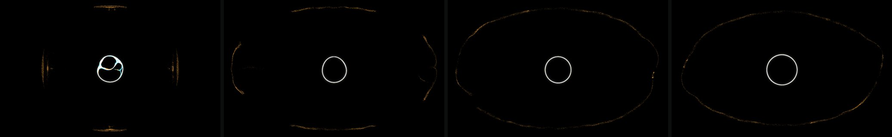
2 s5 s10 s20 s
Builders: 30% step half as far and lay 3x
median distance at 20 s
70-77 (seed 3: 129-158)
Looks like the plain ring.
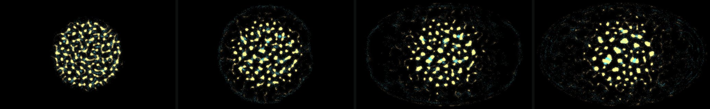
2 s5 s10 s20 s
Grazing outriders: grazing droplets, 20% reach 3x and lay 0.3x (frames at 2, 5, 10, 20 s of 30)
outer edge at 30 s
299-303 against 192-199 for plain grazers, 3 of 3
scouts off the trail
25%
The droplets stay as bodies. Their scouts leave and haze out over the whole dish.
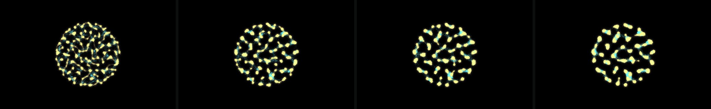
2 s5 s10 s20 s
Bridged droplets: droplets, 20% reach 3x and lay 0.3x
outer edge at 30 s
174-176 against 180-182
The scouts collect at the edges of the droplets and link neighbours into chains.3 · For play
A body plan, not a uniform mesh
Mixed walkers don't blend. They split into parts with jobs: outriders on the edge, a core that holds, a cord, a crawling knot. Outriders reach the edge of the map in seconds but are faint, so they're easy to cut. A splitter sends its mass out and keeps a dense core. A roamer moves its whole body. The next test runs these with food, to see whether a body plan changes who reaches a crystal first and who keeps it.